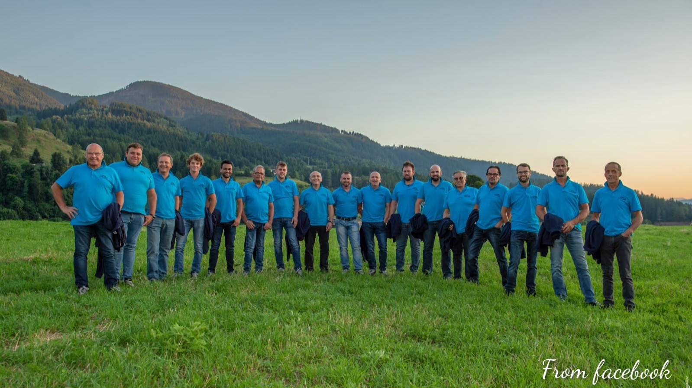

Musica trentina -> Band della Val di Fiemme
Avisio Mix
Nati nel 2018, gli Avisio Mix sono una band folkloristica molto giovane di Capriana. Il repertorio della band è molto vasto: passa dal pop contemporaneo al folk popolare; dal pop tedesco a liscio italiano.
Video
Social e contatti
Alpen Boys
Gli Alpen Boys nascono nel 2006 e sono una delle band folkloristiche più conosciute della zona. La band vi allieterà con musiche tirolesi e musiche di cantautorato italiano.
Video
Social e contatti
Sito web ufficiale
Musica trentina -> Band della Val di Fiemme
Coro Negritella
Il coro Negritella nasce a Predazzo nel 1954. Il repertorio è formato principalmente da canti tradizionali di montagna. Essendo un coro alpino è molto noto in Trentino ma ha partecipato anche a numerose torunè all'estero. L'organo ha inciso 4 dischi.
Video
Social e contatti
Sito web ufficiale
Coro Rio Bianco
Nato nel 1995, il coro Rio Bianco di Panchià è l'unico organo misto della Valle di Fiemme. E' specializzato in canti popolari di tutto il mondo. Nel 2013 ha pubblicato il suo primo disco.
Video
Social e contatti
Coro Slavaz
Il Coro Slavaz nasce a Tesero nel 2003. Molto famoso in zona, si occupa principalmente di canti trentini e di montagna. Il coro è composto per la maggiorparte da giovani ragazzi.
Video
Social e contatti

Coro Stelune
Il coro Stelune è estremamente giovane, nasce nel 2017 a Cavalese ed è attivo principalmente sul territorio della Valle di Fiemme e di Fassa. Si esibisce principalmente su canti popolari.
Video
Social e contatti